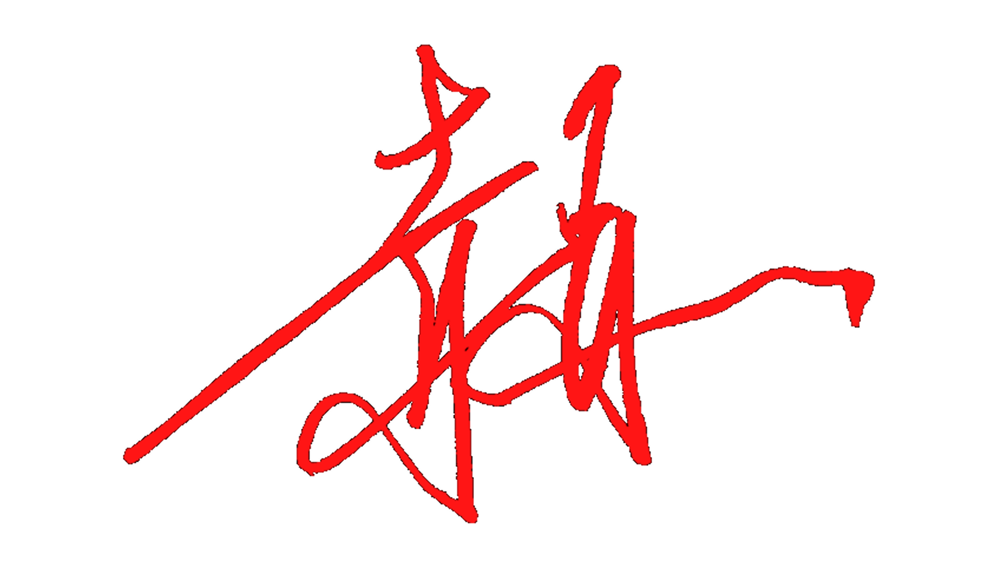
Record of the Anomaly 異常の記録
The complete production process behind a first-person horror film blending Japanese aesthetics with POV horror. From concept art to sculpting, procedural generation, rendering optimization, compositing, and sound design — this document records the technical story behind the work, across six perspectives. 和風の美学と POV ホラーを掛け合わせた一人称ホラー映像の全制作工程。 コンセプトアートから造形、プロシージャル生成、レンダリング最適化、コンポジット、 そして音響設計まで — 6 つの視点から本作の技術的な舞台裏を記録する。
Production Pipeline プロダクションパイプライン
This project uses multiple software packages and middleware tools across every stage of production — from Unreal Engine for real-time previews, to Maya, Blender, and Houdini for sculpting and simulation, through to NukeX, After Effects, and Premiere Pro for final finishing. At each stage, the tool best suited to the task was chosen deliberately, for a clear reason. 本作は各工程において複数のソフトウェア・ミドルウェアを使用している。 リアルタイムプレビューが可能な Unreal Engine から、造形・シミュレーションに特化した Maya / Blender / Houdini、そして仕上げの NukeX / After Effects / Premiere Pro まで、 それぞれの工程で最適なツールを選び、明確な理由をもって使い分けた。
Concept Art コンセプトアート Unreal Engine 5.8
Concept art was produced in Unreal Engine 5.8. Rather than locking in the final look, this concept art served to preview the mood of the models and the atmosphere of the piece.
A workflow centered on Unreal Engine 5.8 was also considered for its rendering speed, but was ultimately set aside once the decision was made to make active use of Blender Geometry Nodes. コンセプトアート制作は Unreal Engine 5.8 で行った。ここでのコンセプトアートは最終的な絵作りを決めるものというより、
モデルの雰囲気と作品の空気感をプレビューするためのものである。
レンダリング速度を考慮し、Unreal Engine 5.8 を中心とするワークフローも検討したが、Blender Geometry Nodes を積極的に使用する方針を決めたため見送った。

Background Making 背景メイキング Maya / Blender
Background environments were built mainly in Autodesk Maya and Blender. Procedural modeling used Blender Geometry Nodes, while everything else was built entirely in Maya. The balance considered was between the flexibility of Geometry Nodes and the data precision of Maya. Final scene assembly and shooting were done in Blender, since Cycles and EEVEE were used, and work produced in Maya was handed over in FBX format. 背景メイキングは主に Autodesk Maya と Blender で行った。プロシージャルモデリングは Blender Geometry Nodes、それ以外はすべて Maya で制作している。 考慮したのは Geometry Nodes の柔軟性と Maya のデータ厳密性のバランスである。 最終的なシーンメイキングと撮影は Cycles と EEVEE を使うため Blender で行い、 Maya 制作物は FBX 形式で受け渡した。
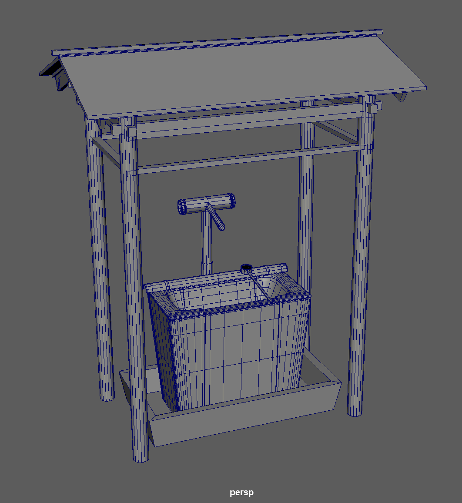


Texture Production テクスチャ制作 Substance 3D Painter / Sampler
Texture work was done mainly in Substance 3D Painter. Models UV-unwrapped in Maya were painted and exported as high-precision 4K textures. For large-scale objects or ones seen in close-up — such as the main shrine hall or the water basin — a UDIM tile workflow was used to preserve resolution. Textures for natural objects were produced by processing our own 3D surface scan data in Substance 3D Sampler. テクスチャ制作は主に Substance 3D Painter で行った。Maya で UV 展開したモデルを塗り、 4K 高精度テクスチャとして書き出している。神社本殿や手水など規模が大きい、あるいはクローズアップのあるオブジェクトは UDIM タイルワークフローを採用し解像度を確保した。自然物のテクスチャは独自の 3D 表面スキャンデータを Substance 3D Sampler で処理したものである。
Creature Production クリーチャー制作 Blender / Marvelous Designer / VRoid Studio
The creature (the monster character) was built using Blender alongside Marvelous Designer and VRoid Studio. Since the character’s body itself is barely visible in the final footage and mainly exists as a collision target for cloth simulation, a highly detailed custom model was judged unnecessary, so a base body was instead generated in VRoid Studio. The head was sculpted in Blender’s Sculpt Mode, and the spider lilies (higanbana) were generated procedurally with Geometry Nodes. クリーチャー（バケモノキャラクター）は Blender のほか、Marvelous Designer と VRoid Studio を用いた。 最終映像でキャラクターの身体自体はほとんど映らず、あくまでクロスシミュレーションのコリジョン対象であるため、 高度な独自モデルは不要と判断し VRoid Studio で素体を生成するアプローチを採った。 頭部は Blender のスカルプトモードで制作し、彼岸花はジオメトリノードでプロシージャルに生成している。
After rigging and animation were done in Blender, the data was imported into Marvelous Designer via Alembic to run cloth simulation on the costume. The result was baked onto the model and brought back into Blender via Alembic once again for shooting. リギングとアニメーションを Blender で行った後、Alembic 形式で Marvelous Designer にインポートして衣装のクロス演算を実行。 結果をモデルにベイクし、再び Alembic で Blender に戻して撮影した。
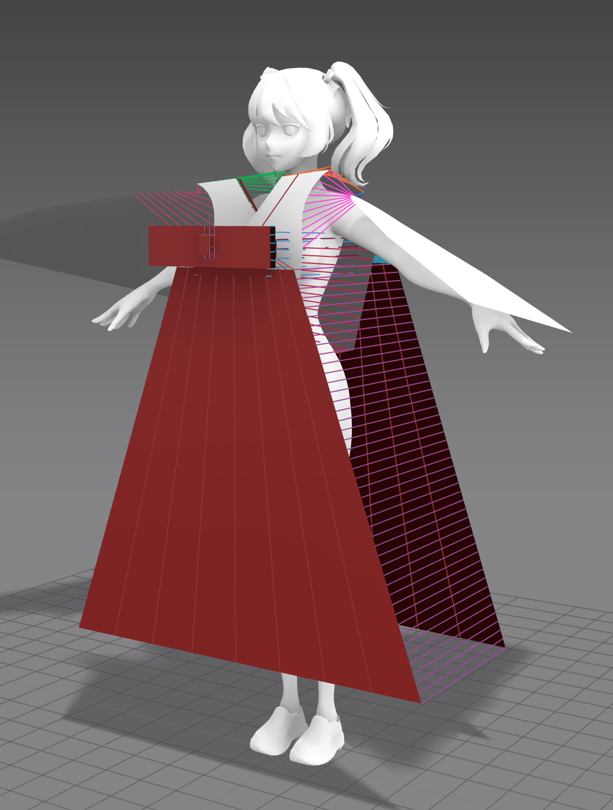
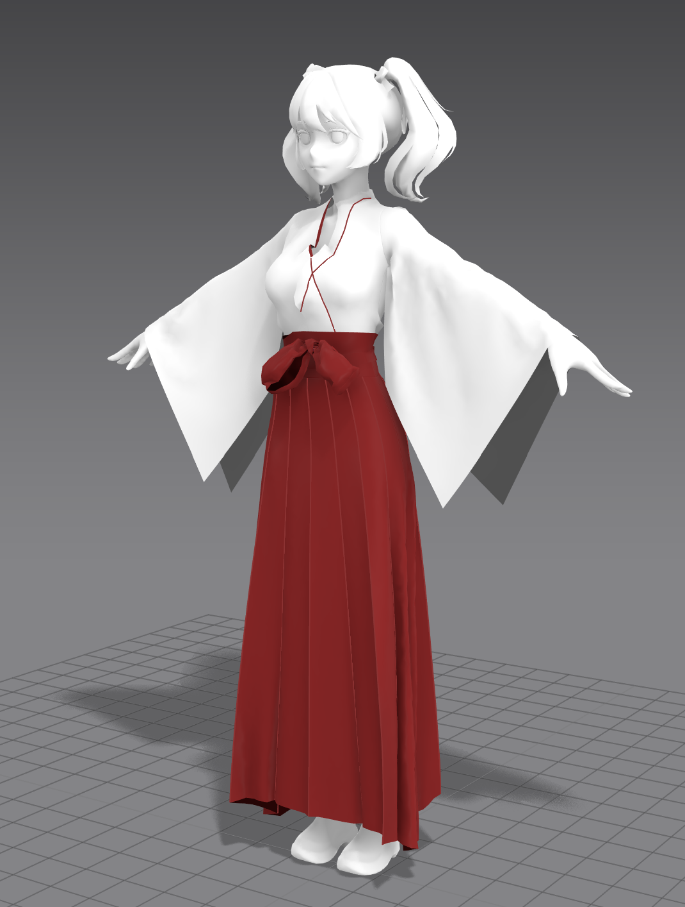
Shooting → Compositing → Editing 撮影〜コンポジット〜編集 Blender → NukeX → After Effects → Premiere Pro
Camera and bone animation were set up in Blender, output passes were defined via compositing nodes, and everything was exported in multi-layer OpenEXR format — valued for being able to store a large number of passes in a single file. The exported render data was composited in NukeX, exported as 16-bit PNG, and then fine-tuned for pacing in Adobe After Effects, chosen because it handles linear timeline editing better than NukeX. The final export used visually lossless Apple ProRes 4444 XQ, with final editing done in Adobe Premiere Pro. Blender でカメラ・ボーンアニメーションを設定し、出力パスをコンポジットノードで定義、 Multi-layer OpenEXR 形式で出力した。大量のパスを同一ファイルに格納できる点を評価している。 書き出されたレンダリングデータは NukeX で合成し、16-bit PNG で書き出したのち Adobe After Effects でテンポなどを微調整した。NukeX よりも線形的なタイム編集が得意な点が採用理由である。 最終的に視覚的無劣化の Apple ProRes 4444 XQ で書き出し、Adobe Premiere Pro で最終編集を行った。
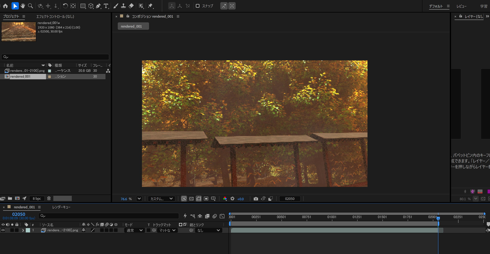

Sound 音響 REAPER / Audacity / Adobe Audition / dearVR Pro 2
For audio, REAPER was chosen as the DAW for its lightness and flexibility, and used for automation, mixing, and mastering. Audacity handled basic waveform editing, while Adobe Audition was used for denoising and syncing audio to picture. The dearVR Pro 2 plugin was adopted to add depth and spatial believability to the sound (see Chapter 06 for details). 音響は軽量さと柔軟性を考慮し DAW として REAPER を採用、オートメーション・ミキシング・マスタリングを行った。 初歩的な波形編集は Audacity、デノイズ処理や映像とのタイミング合わせには Adobe Audition を使用。 音声の奥行き感と空間的な説得力を上げるため dearVR Pro 2 プラグインを採用している（詳細は 06 章）。
Art, Sculpting & Look Dev 美術、造形とルックデヴ
This work interprets horror’s core device — “an abnormal presence intruding on everyday space” — as a way of staging surprise through “the extraordinary within the ordinary,” and was built around the guiding principle of POV horror grounded in Japanese aesthetics. 本作は「日常における非日常」による「驚きの演出」を、ホラーの「異常存在の日常空間への侵入」と解釈し、 和風の美学を生かした POV ホラーを制作方針とした。
a. Concept Art a. コンセプトアート
As a foundation for previewing the mood of the models and the atmosphere of the piece, the real-time concept art produced in Unreal Engine, introduced in Chapter 01, was the starting point for all of the material production and direction design described below. モデルの雰囲気と作品の空気感をプレビューするための土台として、01 章で紹介した Unreal Engine による リアルタイムコンセプトアートが、以下の素材制作・演出設計すべての起点となっている。
b. Materials b. 素材
To faithfully reproduce a distinctive art style, this production avoided reusing off-the-shelf distributed assets such as free packs wherever possible. Textures for man-made objects were hand-painted in Substance 3D Painter, while natural objects were surface-scanned and processed in Substance 3D Sampler for seam removal and normal adjustment. Organic textures that are hard to reproduce in reality were generated procedurally in Substance 3D Designer. The fallen leaves are the result of scanning real leaves gathered by hand, applying them to flat polygons, and running rigid-body simulation. 独自の美術スタイルを想定通りに再現するため、本制作ではフリー素材など既製の配布物の二次使用をなるべく避けた。 人工物のテクスチャは Substance 3D Painter で手描きし、自然物はサーフェススキャンを行い Substance 3D Sampler で シーム除去や法線調整を施した。現実で再現しにくい有機物のテクスチャは Substance 3D Designer でプロシージャルに生成している。 葉っぱは実際に拾った落ち葉をスキャナーでスキャンし、板ポリゴンに付与した上で剛体物理演算を行った結果である。
That said, whenever free assets from BlenderKit or Poly Haven were used, the following customizations were applied: なお BlenderKit や Poly Haven のフリー素材を使用した場合は、以下のカスタム化を行った：
- Shader-based color adjustment — rather than using textures as-is, color was adjusted through Blender shader nodes, blending multiple textures together. シェーダーによるカラー調整テクスチャをそのまま使わず、Blender のシェーダーノードで色調整を施し、複数テクスチャをブレンドして使用した。
- Distance-based LOD — for background objects like trees, a distance-based LOD system was built with Geometry Nodes to reduce on-screen polygon count. 距離ベースの LOD木などの背景物は Geometry Nodes でカメラ距離に基づく LOD システムを構築し、画面のポリゴン数を削減した。
For sound as well, in addition to adjusting free BGM and sound effects, stereo field recordings were made using a ZOOM V3 microphone. Real birdsong recorded in the mountains was mixed and adjusted to aim for an immersive ambient experience. 音効についても、フリー BGM・効果音の調整に加え、ZOOM V3 マイクを用いた立体音声収録を行った。 実際の山の鳥の鳴き声を収録し調整・混合することで、臨場感のあるアンビエント体験を目指した。
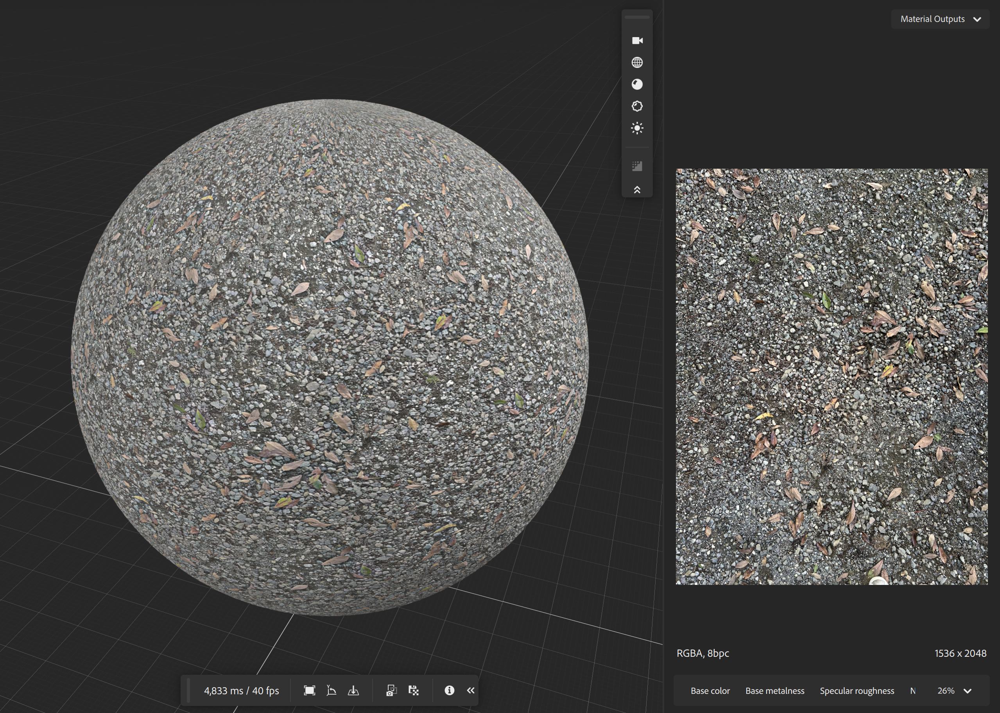
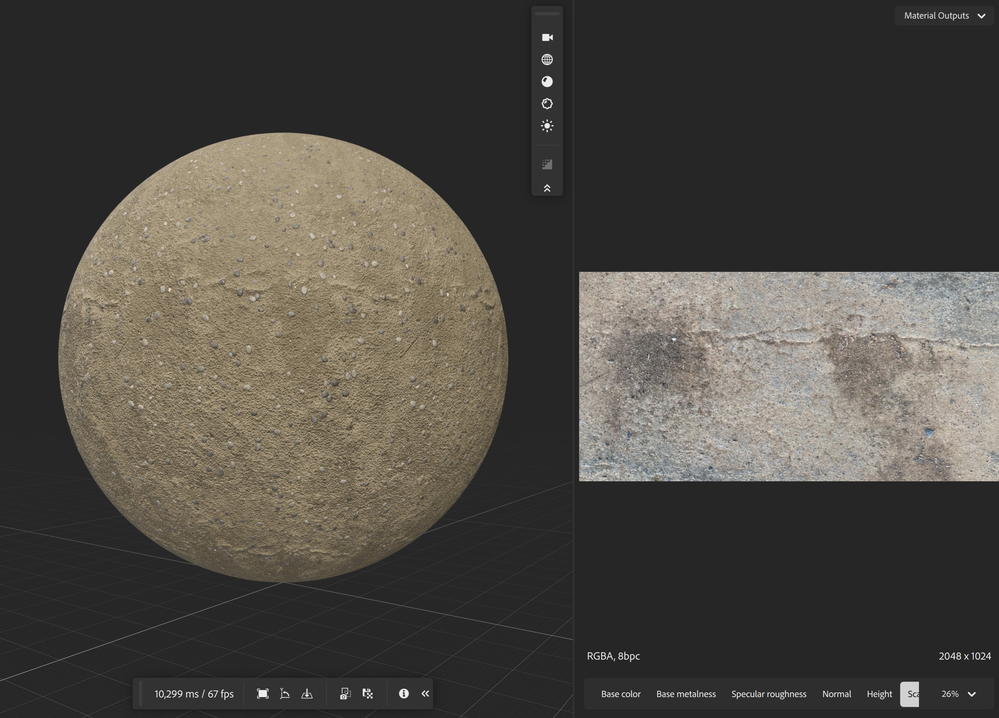

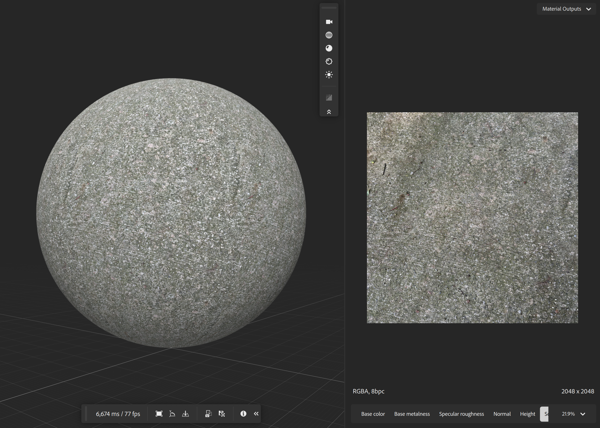


c. Direction & Camera Work c. 演出 Camera / Omniscient
This work is POV horror and uses first-person camera work throughout. The key challenge was how to make the camera feel like the character’s own eyes, in order to heighten immersion and presence. 本作は POV ホラーであり、一人称視点のカメラワークをとる。カメラをいかにキャラクターの目のように調整し、 没入感・臨場感を高めるかが重要であった。
To reference real camera movement, a location scout was carried out at Shiromine Shrine in Okagaki, Fukuoka Prefecture — known as the “stairway shrine” for its long staircase leading up to the torii gate. Virtual camera footage and tracking were captured using the Omniscient app and a smartphone chest mount, then imported into Blender via Alembic as a reference for camera motion. 現実のカメラワークを参考にするため、鳥居前に長い階段があり「階段神社」とも呼ばれる福岡県岡垣町の白峯神社でロケハンを実施。 Omniscient アプリとスマートフォン用チェストマウントを用いてバーチャルカメラ撮影とトラッキングを行い、 Alembic 形式で Blender にインポートしてカメラの動きの参考にした。
However, the tracked camera data contained too much shake and unexpected vibration to use directly, so that approach was abandoned. Instead, a simple humanoid rig was built and the camera parented to its head to recreate first-person camera work. Broad movement was created with bone animation, and a noise modifier reproduced natural handheld shake. In scenes with heavy vertical motion on the stairs, noise was also applied to Z-axis movement. ただしトラッキングされたカメラワークは揺れや想定外の振動が激しく、そのままの使用は断念。 代わりに簡易な人型リグを構築し、カメラを頭部に親づけすることで一人称カメラワークを再現した。 ボーンアニメーションで大まかな移動を作り、ノイズモディファイアで自然な手ブレを再現。 階段の上下運動が激しいシーンでは Z 軸移動にもノイズを適用した。

d. Creature Design d. クリーチャー造形
For the horror to feel convincing, the design of the monster character was critical. Since this work values Japanese aesthetics and atmosphere as much as horror itself, it needed to embody the seemingly contradictory concept of “beauty within the grotesque.” 説得力のある恐怖感のためには、バケモノキャラクターの造形が非常に重要である。本作は単なる恐怖だけでなく 和風の美学と空気感も重んじるため、「グロテスクの中に美しさ」という一見矛盾する概念を造形する必要があった。
The design approach was based mainly on color association. The fleshy red of horror-appropriate biological tissue was paired with spider lilies (higanbana), flowers associated with death and bad omens. Red wood was placed around the face to add a sense of Japanese gravitas. The costume uses a shrine maiden’s outfit, aiming for the shock of “an ordinary miko from behind, but a horrifying monster the moment she turns around.” 発想法は主に色に基づく連想である。ホラーらしい肉々しい生体組織の赤に、不吉や死を連想させる彼岸花を合わせた。 さらに顔まわりを赤い木で囲み、和風の重みを演出。服装には神社の巫女服を採用し、 「後ろから見れば普通の巫女だが、振り返ったらおぞましいバケモノ」という驚きの演出を狙った。


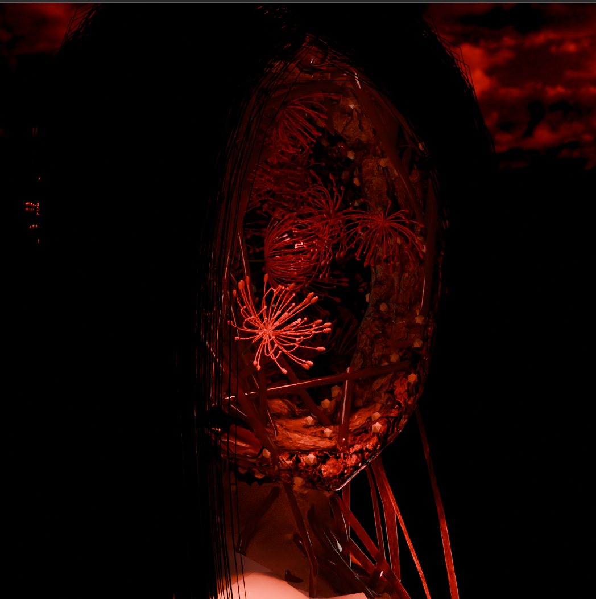
Procedural Generation プロシージャル生成
To keep assets flexible to edit and reuse, procedural modeling — centered on Blender Geometry Nodes — was adopted extensively throughout production. Rather than disposable, single-use assets, the goal was versatile asset resources that can also serve future productions. アセットを柔軟に修正・再利用するため、Blender Geometry Nodes をはじめとするプロシージャルモデリングを積極的に採用した。 使い捨てではなく、今後の制作にも活かせる汎用性のあるアセット資産を目指している。
a. Blender Geometry Nodes a. Blender Geometry Nodes
This production built seven distinct Geometry Nodes systems. Since all of them are general-purpose and usable beyond this project, they are planned for release as free assets on Gumroad. 本制作で構築したジオメトリノードシステムは 7 種類。すべて汎用性を持ち、 本制作以外にも活用できると考え、Gumroad にフリーアセットとして公開予定である。
Procedural generation removed much of the manual work of fine-tuning, creating variations, and mass placement, and real-time feedback greatly sped up the look-dev iteration cycle. As a development practice, every Geometry Nodes system was built in a separate file from the main project file, for three reasons: avoiding unintended changes, saving load time for the huge main file, and preserving the independence and reusability of the assets. プロシージャル生成により、微調整・バリエーション作り・大量配置の手間を省き、リアルタイムフィードバックで ルックデヴのイテレーション速度が大きく向上した。開発の工夫として、すべての Geometry Nodes を メインプロジェクトファイルとは別ファイルで開発している。理由は、意図せぬ変化の回避・巨大ファイルの読み込み時間の節約・ アセットの独立性と再利用性の確保の三点である。
- Spider lily (higanbana) generation — spider lilies generated entirely procedurally. Petals are defined with curves, with curvature controlled via a power function for flexible shaping. Instance duplication builds up layers, and snapping onto a sphere shapes the realistic central stamens. 彼岸花生成完全プロシージャルに彼岸花を生成。花びらをカーブで定義し、曲率をべき関数で制御することで柔軟な造形を実現。インスタンス複製でレイヤーを作り、球体へのスナップで中心部のシベをリアルに造形した。
- Ripple generation — for the final room scene, where the wooden floor liquefies and ripples spread outward. Built with vertex offset and trigonometric functions, with faint Z-axis noise adding an organic feel. 波紋生成最後の部屋シーンで木製の床が液体化し波紋が広がる表現。頂点オフセットと三角関数で作り、Z 軸の微弱なノイズで有機感を出した。
- Underwater diffusion — the scene of blood spreading through the liquefied floor was built by combining Geometry Nodes and shader nodes. Distance to the ripple’s center is calculated in Geometry Nodes and passed to the shader as a float attribute, driving the diffusion and blending. 水中拡散床が液体化し血液が広がるシーンをジオメトリ／シェーダーノード併用で制作。波紋中心までの距離をジオメトリノードで計算し float 属性としてシェーダーに渡すことで拡散と混合を実現。
- Camera LOD — to improve performance, tree models of different LOD levels are placed based on their direction and distance from the camera. カメラ LODパフォーマンス改善のため、カメラからの方角と距離に基づいて異なる LOD の木モデルを配置。
- Staircase generation — a node graph that lets slope, step count, step height, and width all be adjusted and evaluated in real time, making background adjustment extremely smooth. 階段生成傾斜率・段数・各段の高さ・横幅などをリアルタイムで調整・評価できるノードグラフを構築し、背景調整が非常にスムーズになった。
- Corruption effect — the scene where the room’s walls are overtaken by red biological tissue. Vertex groups are defined dynamically and displacement applied dynamically; vertex-group data is also passed to the shader to drive material spread. 侵食表現部屋の壁が赤い生体組織に侵食されるシーン。頂点グループを動的に定義しディスプレースメントを動的適用。頂点グループのデータをシェーダーに渡しマテリアルの拡散も実現。
- Vine generation — curves are placed radiating out from a center point, then heavily offset by noise in the direction perpendicular to their tangent, producing vines that appear to creep inward toward the center. つる生成中心から放射状にカーブを配置し、接線に垂直な方向へノイズで大幅にオフセットさせることで、中心に向かって進むつるを表現。
- Logo animation — the opening logo animation was built using curve tools together with Geometry Nodes. ロゴアニメーション映像冒頭のロゴアニメーションは、カーブ機能と Geometry Nodes で制作。

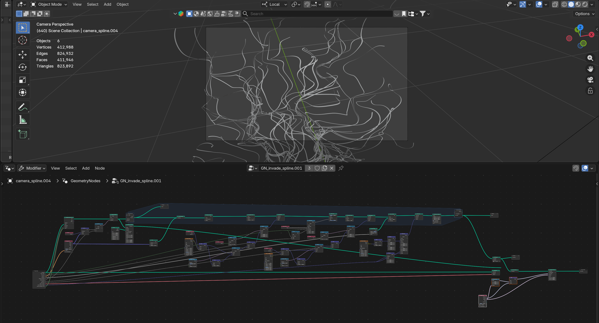
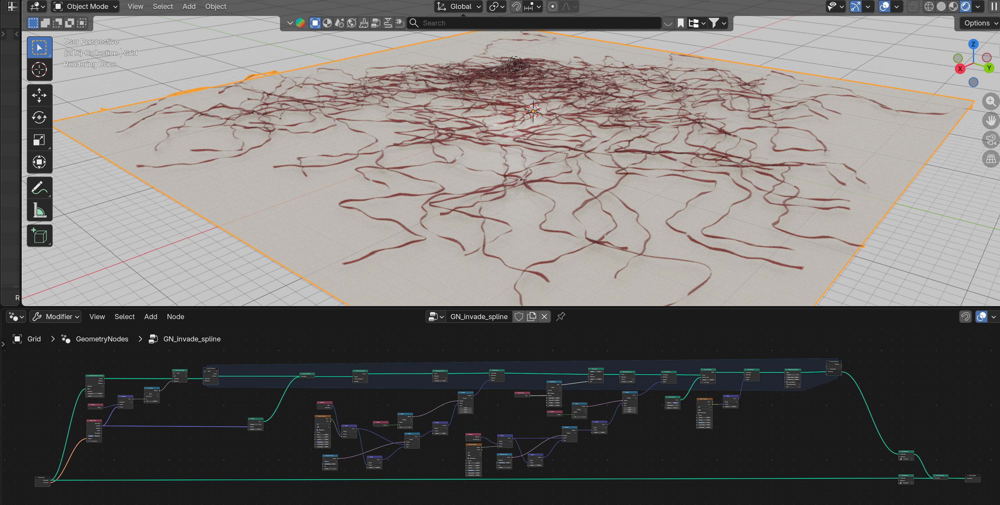

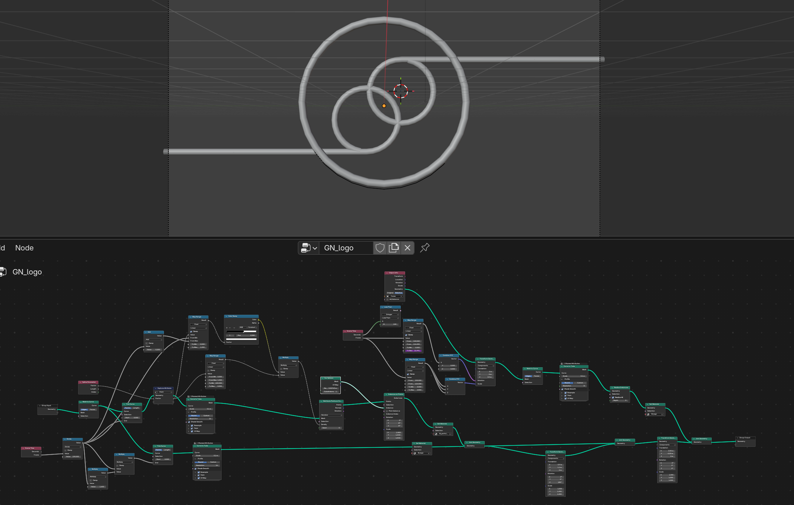
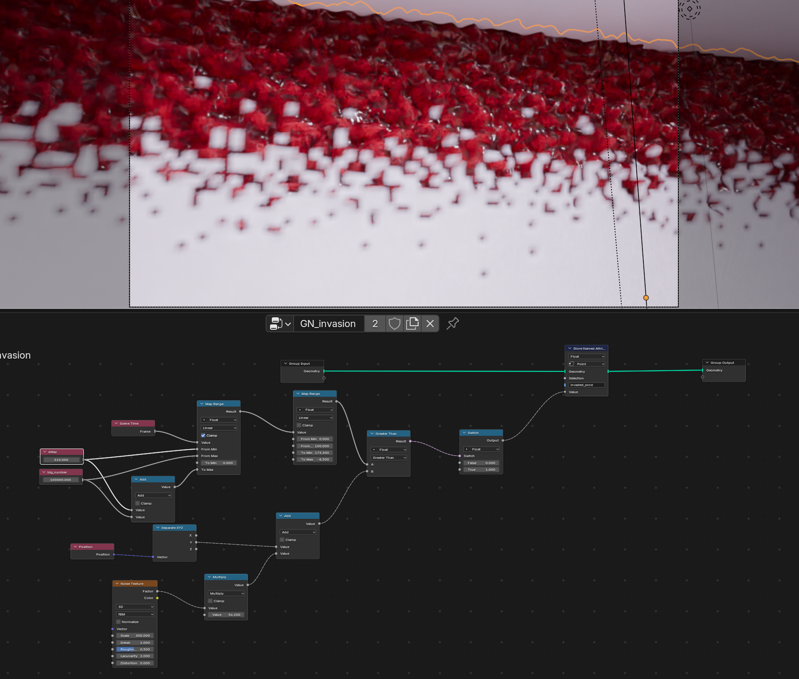
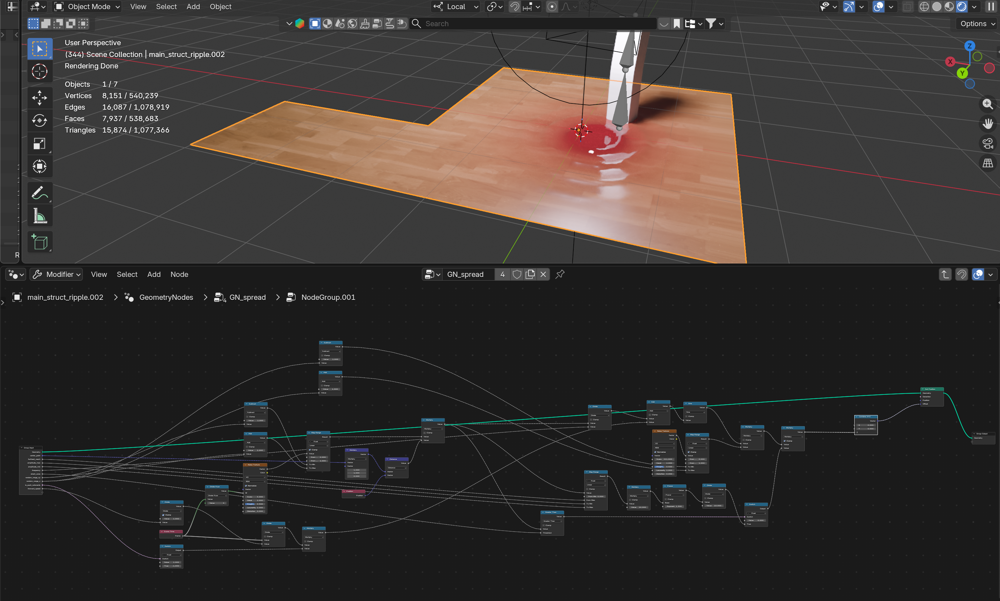

b. Houdini b. Houdini
The ink animation for the title display was achieved with fluid simulation in Houdini. Gas fluid simulation via Blender’s Mantaflow solver was tested first, but fine control over the smoke’s shape and natural underwater dispersion proved difficult. A volume approach using Geometry Nodes was also tried, but shaping it into the ideal form was hard, so the project moved to Pyro simulation via Houdini’s DOP network. 映像タイトル表示のインクアニメーションは Houdini の流体シミュレーションで実現した。 最初は Blender の Mantaflow ソルバーによるガス流体を検証したが、煙の形状の微調整と水中散乱の自然な表現が困難であった。 ジオメトリノードでボリューム表現を試みたものの、理想的な形状に調整するのは困難であったため、 Houdini の DOP ネットワークによる Pyro シミュレーションに移行した。
Setting buoyancy low while raising turbulence and disturbance produced a finely detailed rendering of ink dispersing underwater. To allow fast color adjustment, the render out of Houdini was kept monochrome, exported in OpenEXR format via the Karma render engine. buoyancy を低め、turbulence と disturbance を高めに設定することで、水中で散乱していくインクを細かく表現。 色彩調整を素早く行えるよう Houdini からはモノクロでレンダリングし、Karma レンダリングエンジンを用いて OpenEXR 形式で書き出した。
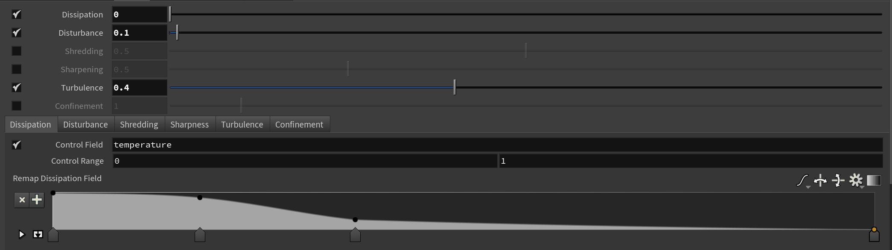
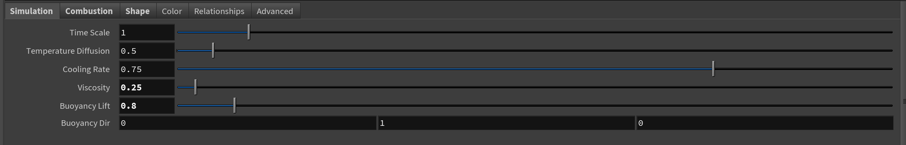


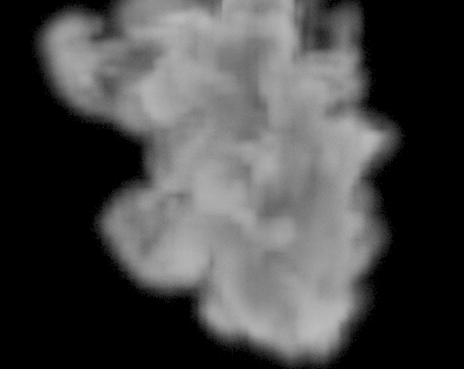

c. Procedural Materials c. プロシージャルマテリアル
To produce materials that matched the world of the piece, off-the-shelf texture assets and our own 3D scan data were adjusted, modified, and blended in Substance 3D Designer and Blender Shader Nodes. The staircase surface blends two stone materials — one from our own scan data, one off-the-shelf — to reproduce both the areas “covered in mud and sand” and the areas of “exposed base stone.” A separate mud material was also composited in to reproduce the mud that collects in the joints between steps. 世界観に合うマテリアル制作のため、既製テクスチャアセットと独自の 3D スキャンデータを Substance 3D Designer および Blender Shader Nodes で調整・改造・ブレンドした。階段のサーフェスは「泥や砂に覆われている」部分と 「露出しているベースの石」の部分を再現すべく、独自スキャンデータと既製テクスチャの 2 種類の石マテリアルをブレンド。 段の繋ぎ目に溜まる泥を再現するため、別の泥マテリアルも合成している。
The monster character’s texture was reached only through extensive trial and error. Blender shader nodes alone produced a flat, obviously-CG look, and off-the-shelf biological tissue materials didn’t match the mood of the piece, so both were rejected. In the end, the solution was to modify 3D scan data of real biological tissue in Substance 3D Designer. Beef was purchased, its surface muscle and fat distribution analyzed, and then texture-scanned. The resulting images were adjusted in Sampler, and Designer was used to procedurally add organic deformation, polyp-like protrusions, and blood vessels. Blending Voronoi, Noise, and Cell Texture produced random, natural-looking deformation, and this material was later reused for the wall-corruption effect in the room scene. バケモノキャラクターのテクスチャは試行錯誤の末に得られた。Blender シェーダーノードのみでは単調で CG 感が出てしまい、 既製の生体組織マテリアルも作品の雰囲気に合わず不採用。最終的に 現実の生体組織の 3D スキャンデータを Substance 3D Designer で改造する手法を考案した。 牛肉を購入し表面筋肉と脂の分布を分析した上でテクスチャスキャンを実施。得られた画像を Sampler で調整し、 Designer で有機的な変形・ポリープ状隆起・血管をプロシージャルに追加した。Voronoi・Noise・Cell Texture を ブレンドすることでランダムで自然な変形を実現し、このマテリアルは後の部屋シーンの侵食表現にも流用された。
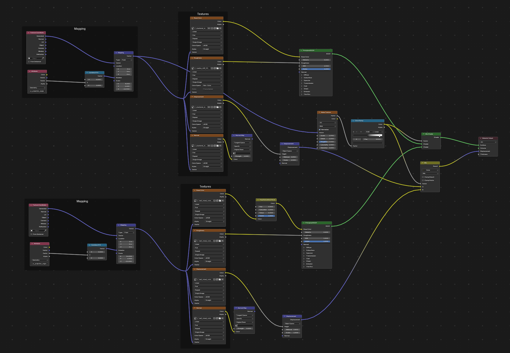

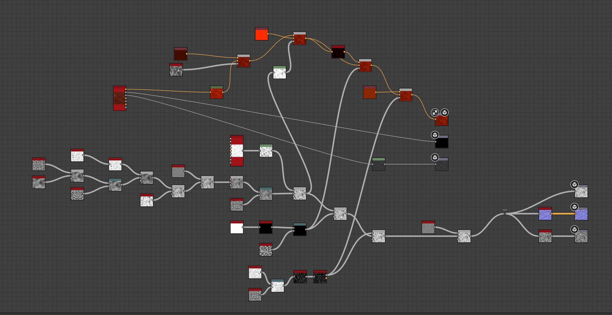
Rendering & Optimization レンダリングと最適化
This work aimed for visual quality where “any single frame could stand on its own as a piece of art” — and the resulting obsession with detail produced an enormous amount of data. Early estimates put render time at 10 minutes per frame with over 500GB of total data, making it unrealistic to finish by the deadline. After extensive trial and error, this was optimized down to an average of 70 seconds per frame and 129GB of total output data. 本作は「どの一フレームを切り取っても絵として飾って恥ずかしくない」映像美を目指しており、 隅々のディテールにこだわった結果、データ量が膨大になった。当初の試算では 1 フレーム 10 分・総データ量 500GB 以上と、締め切りまでに仕上げるのは非現実的であった。 試行錯誤の末、1 フレーム平均 70 秒・総出力データ量 129GB まで最適化している。
Machine Specifications 使用マシン スペック
a. AOV Splitting a. AOV 分割
Even after optimization, raw render time remained long, so re-rendering for every small tweak to a shot was inefficient. Some effects, like fog, would add even more render time if handled at render time. To allow changes without re-rendering, AOV pass separation was pursued rigorously. The information needed for compositing each shot was mapped out in advance, and the AOV passes in the multi-layer EXR were defined with neither excess nor shortfall. Each layer was also exported only for the frame ranges it actually needed, cutting down on unnecessary output. 最適化してもレンダリング時間自体は長いため、細かい演出修正のたびに再レンダリングするのは非効率である。 フォグなど、レンダリングで行うと所要時間がさらに伸びる表現もある。再レンダリング不要な修正を可能にするため、 AOV パス分けを徹底した。各カットの合成に必要な情報をあらかじめ洗い出し、Multi-layer EXR の AOV パスを過不足なく定義。各レイヤーを必要なフレーム分のみ書き出すことで不要な書き出しも削減した。
This approach made the volume of render data — spanning different timelines and shots — enormous and complex, which led to the development of an in-house render-management framework called Render Protocol. It works as a recipe document defining render settings and output attributes, guaranteeing identical output on any device as long as it matches the recipe. This let dozens of layers be handled accurately, saved time spent double-checking settings, and improved overall production stability. このアプローチにより時間軸もカットも異なるレンダリングデータが膨大かつ複雑になったため、 Render Protocol という独自のレンダリング管理フレームワークを開発。 レンダリング設定や出力属性を定義するレシピとして機能し、デバイスを問わずレシピと照合すれば同じ出力が保証される 文書書式である。これにより数十に及ぶレイヤーを正確に扱え、設定確認の時間を節約し制作の安定性が向上した。
Data volume grew in proportion to the number of AOV passes, and even with half-float multi-layer EXR, the total initially exceeded 500GB — an unmanageable amount. To address this, the visually lossless DWAB compression format was adopted, with compression ratios tuned per shot between 55% and 80%, bringing the total down to a manageable range of around 130GB. AOV パス量の分だけデータ量も増大し、当初は Half-float の Multi-layer EXR でも合計 500GB 以上になり 扱いきれなかった。そこで視覚無劣化の圧縮形式 DWAB を採用し、カットごとに圧縮率を 55%〜80% に調整することで 合計 130GB 前後の現実的な範囲に収めている。

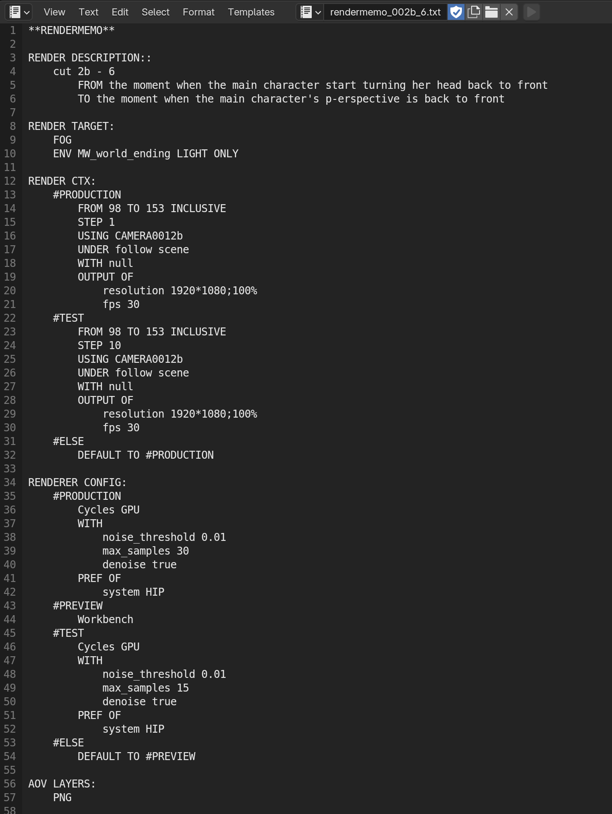
| Layer Name レイヤー名 | Contents 内容 |
|---|---|
| cut001_1_mainsetup | Main background (frames 1–720) メイン背景（フレーム 1–720） |
| cut001_1_mainsetup_A | Main background (frames 721–2100, with Cryptomatte) メイン背景（フレーム 721–2100、Cryptomatte 付き） |
| cut001_2_env | Main HDR メイン HDR |
| cut001_3_leaves | Fallen leaves 落ち葉 |
| cut002_1_karasu | Crows カラス |
| cut002_2_envnorm | Main HDR メイン HDR |
| cut002_3_envending | Main HDR (dark) メイン HDR（暗） |
| cut002_4_mainsetup | Main background メイン背景 |
| cut002_5_mainsetupdark | Main background (dark) メイン背景（暗） |
| cut003_1_character | Monster character 化け物キャラクター |
| cut004_1_character | Monster character 化け物キャラクター |
| cut004_2_bgscene | Main background メイン背景 |
| cut004_3_env | Main HDR メイン HDR |
| cut005_1_room | Room body (furniture) 部屋本体（家具） |
| cut005_2_wall | Room walls 部屋の壁 |
| cut005_3_floor | Floor 床 |
| cut005_4_cameraoverlay | Vines covering the camera カメラの前を覆うつる |
| cut005_5_floorspline | Vines つる |
| cut005_6_shadowpass | Furniture shadow pass 家具の影パス |
| cut005_7_positionpass | Position pass 位置パス |
| cut005_8_wallshielding | Wall shielding 壁シールディング |
b. Sampling Settings b. サンプリング設定
Raising the sample count increases render time, while lowering it introduces visible noise. For each shot, the goal was to find “the minimum sample count at which the denoiser can naturally remove any observable noise.” In practice, this kept the base count to 16–64 samples, while shots outputting only shadow or mask passes were rendered at a flat 1 sample. サンプリング数を上げるとレンダリング時間が増大するが、下げるとノイズが出る。各ショットで 「デノイザーで自然に観察可能なノイズを除去できる最低限のサンプリング数」を模索した結果、 基本 16〜64 に抑え、影やマスクのみを出力するショットは 1 サンプリングで割り切った。
Because denoiser performance suffers in dark scenes, dark lighting was avoided at render time; lighting was set at the intended hue and saturation but with higher brightness, and darkened later in compositing, maximizing the denoiser’s effectiveness. As a result, total render time was cut to one-sixth to one-tenth of the original while maintaining overall visual quality. シーンが暗い場合デノイズのパフォーマンスが劣るため、レンダリング時は暗いライティングを避け、 想定と同じ色相・彩度のライティングを高めの明度で施し、コンポジットで暗くすることでデノイザーの効果を最大化した。 この結果、映像全体のクオリティを保ちながら総レンダリング時間を当初の 6〜10 倍短縮できた。
c. Combined Use of Render Engines c. レンダリングエンジン併用
For a realistic horror experience, the ray-tracer Cycles was used as the baseline, while also taking advantage of EEVEE’s speed. The main on-screen layer was rendered in Cycles, while supporting layers such as shadow passes, or effects showing no observable difference between Cycles and EEVEE, were rendered in EEVEE. To avoid any quality loss, any layer considered for EEVEE was tested by extracting a few frames and comparing both engines, and EEVEE was only adopted where no clear difference was visible. In some cases, Cycles’s ray tracing produced unintended lighting effects, and EEVEE actually matched the intended art direction better. リアルなホラー体験のため基本はレイトレーサーの Cycles を採用しつつ、EEVEE の高速性も活用した。 画面の主体レイヤーは Cycles、影パスなど補助的なレイヤーや Cycles と EEVEE で差異が観察できないエフェクトは EEVEE でレンダリング。 クオリティ低下を防ぐため、EEVEE 採用を検討するレイヤーは数フレームを抽出し両エンジンで比較し、明らかな差異がない場合のみ EEVEE を採用した。 Cycles のレイトレーシングが想定外のライティング効果を生み、むしろ EEVEE の方が美術意図に合うケースもあった。
d. LOD d. LOD
During the first render, building the BVH acceleration structure took an abnormally long time. Investigation revealed the bottleneck was the enormous polygon count of the background trees — the same full-detail tree model had been placed regardless of camera distance. A simple LOD switching system was built with Geometry Nodes, three tiers of LOD models were generated with the Decimate modifier, and placement was adjusted by distance. As a result, BVH build time was cut by roughly 30%. 初回レンダリング時、BVH アクセラレータ構造の構築に異常に時間がかかり、調査の結果 背景樹木の膨大なポリゴン数がボトルネックであった。 カメラ距離を問わず同じ木のモデルを配置していたことが原因である。ジオメトリノードで簡易 LOD 切り替えシステムを構築し、 Decimate モディファイアで 3 段階の LOD モデルを作成、距離に応じて配置した結果、 BVH 構築時間が 約 3 割短縮した。
e. VRAM Overflow e. VRAM オーバーフロー
For fine-grained backgrounds and convincing realism, nearly 40 separate 4K textures were used. This drove texture load times up and put heavy pressure on VRAM, forcing spillover into main memory that sharply reduced I/O speed and became a bottleneck. Downgrading textures to 2K was tried, but the visible quality loss ruled it out, so a different fix was pursued while keeping textures at 4K. 繊細な背景と説得力のあるリアリティのため、4K テクスチャを 40 枚近く使用している。そのためテクスチャロード時間が膨大になり VRAM が圧迫され、メインメモリへの退避により I/O 速度が急激に低下しボトルネックとなった。 テクスチャを 2K にダウングレードする対応も試みたが見た目に影響が出るため、4K のまま別の対策を講じることにした。
Rather than using multiple cameras within a single shared scene, each layer and shot was shot from a completely separate scene, allowing an optimization where “only the models and materials that layer actually needs are kept, and everything else is physically deleted.” It was also observed that Blender’s cache builds up in memory over long working sessions, so Blender was restarted before and after rendering any heavy scene. As a result, VRAM usage was kept to a maximum of 11.6GB for most of the time, with main-memory spillover capped at a maximum of 3GB. 各レイヤー・各カットの出力は同一シーンの複数カメラではなく完全に異なるシーンに分けて撮影することで、 「そのレイヤーに必要なモデルとマテリアルのみを残し、それ以外を物理的に削除する」最適化を実施。 さらに Blender を長時間使用するとキャッシュがメモリに溜まる現象が確認されたため、重いシーンのレンダリング前後で Blender を再起動する運用とした。結果、VRAM 消費は大部分の時間で最大 11.6GB、 メインメモリ退避は最大 3GB に抑えられた。
Compositing コンポジット
Wherever possible, effects that would increase render load were pushed off into compositing instead, with the goal of raising the finished quality of the rendered image itself. At the core of this was multi-channel compositing in NukeX using multi-layer OpenEXR. レンダリング負荷を上げうる表現をなるべくコンポジットへ逃がし、 レンダリング出力の絵としての完成度を上げることを目指した。中心となるのは NukeX による Multi-layer OpenEXR を用いたマルチチャンネルコンポジットである。
a. Multi-Channel Compositing a. マルチチャンネルコンポジット
The monochrome cinemagraph images in the prologue were made by processing color images rendered in Blender through Nuke. The blinking crow’s eye was achieved using After Effects’s loopOut expression. プロローグのシネグラフィックス部分のモノクロ画像は、Blender からレンダーしたカラー画像を Nuke で加工したもの。 点滅するカラスの目は After Effects の loopOut エクスプレッションで実現した。
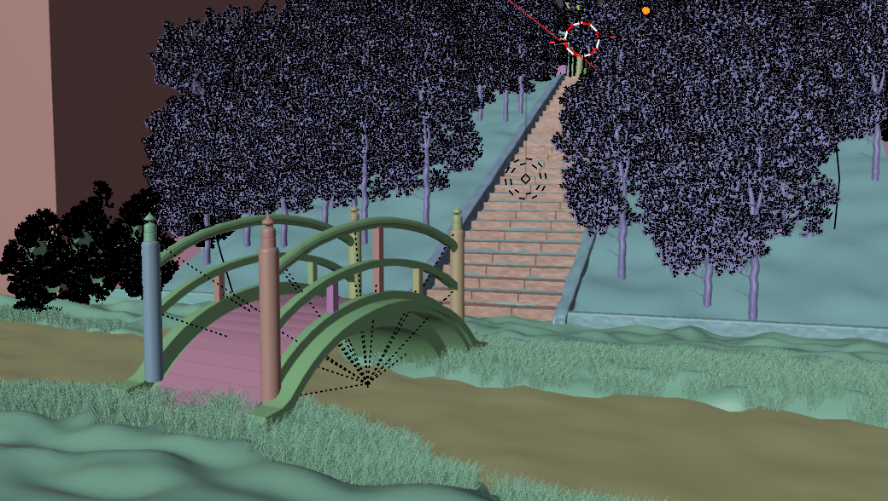


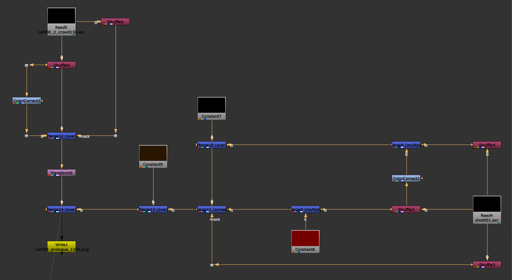
Fog was achieved using the Mist pass. Compositing it directly through a Merge node washed the whole frame out white and killed saturation; multiplying in red-to-orange to match the dusk sky color just made it flat and monotone. A Noise node added grain to enrich the color, but still didn’t produce a sense of depth. In the end, a color derived from the Position pass, based on object position, was multiplied into the Mist pass, producing a pseudo-depth effect that gave the fog spatial richness. フォグ表現は Mist パスで実現した。Merge ノードでそのまま合成すると画面全体が白くボケ彩度が落ちてしまい、 夕暮れの空色に合わせ赤〜オレンジを乗算しても単調で平面的になった。Noise ノードで色にざらつきを加え表現を豊かにしたが 奥行き感が出ず、最終的に Position パスでオブジェクト位置に応じた色を Mist パスに乗算し、 擬似的な深度表現で空間的な豊かさを獲得した。

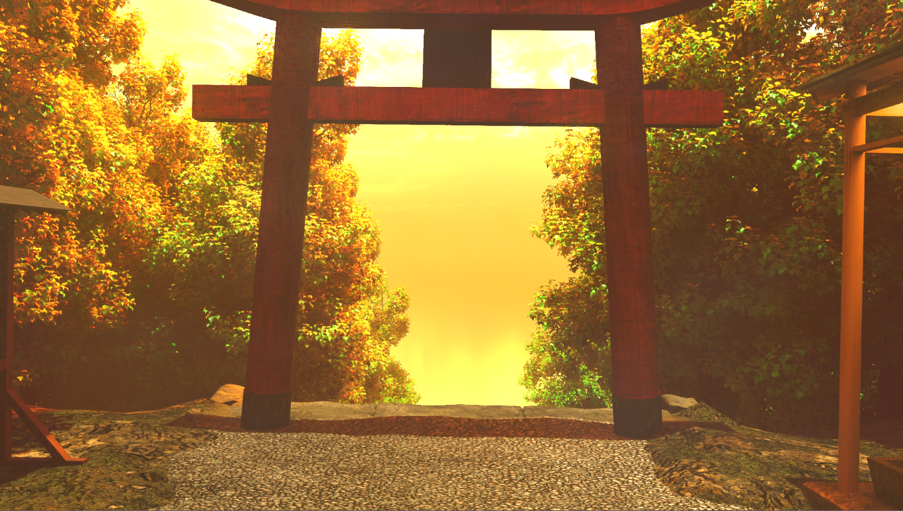
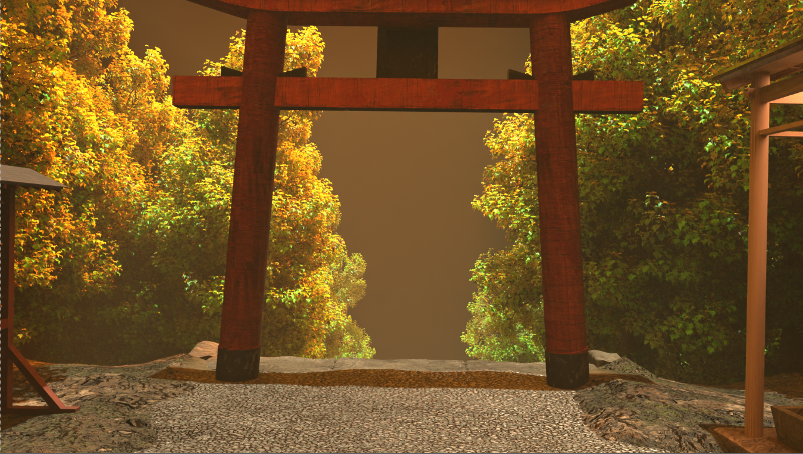
The effect of the floor turning liquid and the desk legs submerging in the room scene was achieved not through 3D refraction and conduction simulation — too computationally expensive — but through compositing based on the Position pass. Only the Z-axis of the desk’s Position pass was extracted, contrast was adjusted with Color Adjustment, and the Z-axis value was linked to the alpha channel, so that the closer a point on the desk got to the floor (the liquid), the more its transparency dropped — producing a convincing pseudo-submersion effect. 部屋シーンで床が液体化し机の足が浸る表現は、屈折・伝導の計算コストが高いため 3DCG ではなく Position パスによるコンポジットで実現した。机の Position パスの Z 軸のみを抽出し、 Color Adjustment でコントラストを調整、Z 軸位置の値とアルファチャンネルを紐付けることで、 床（液体）に近づくほど机の透明度が下がる擬似的な浸水表現を実現した。
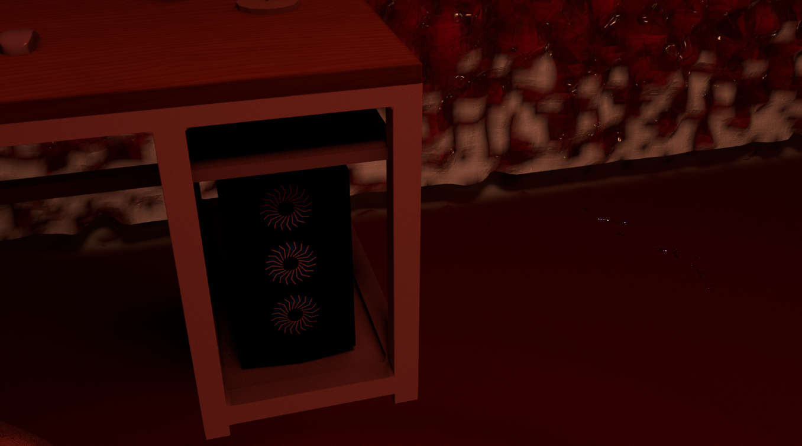
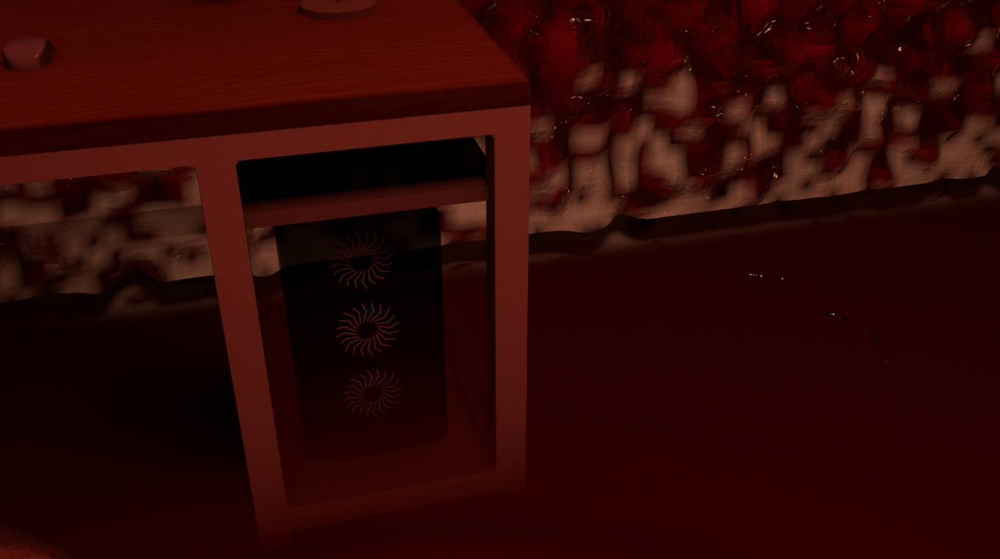
Under dark lighting, the monster character’s hair lost all texture and crushed to solid black. Fixing this on the lighting side would have raised render cost and risked breaking the shading, so it was handled in compositing instead. Compositing an Ambient Occlusion pass onto the Beauty pass produced an unnaturally bright result because of the white AO pass, so the AO pass was multiplied with red to reproduce a more natural-looking reflection. The character was also brightened selectively, based on the Diffuse Color pass, while preserving correct color relationships, to strengthen its sense of belonging within the background. バケモノキャラクターの髪は暗いライティング下で質感が失われ真っ黒に潰れていた。ライティング側で解決すると レンダリングコストが増大しシェーディング破綻のリスクもあるため、コンポジットで対応。 Beauty パスに Ambient Occlusion パスを合成したが白い AO パスにより不自然な明るさが出たため、 AO パスに赤色を乗算することで自然な反射を再現した。 また Diffuse Color パスに基づき、正しい色彩関係を保ったままキャラクターのみを明るくし背景との一体感を強めた。
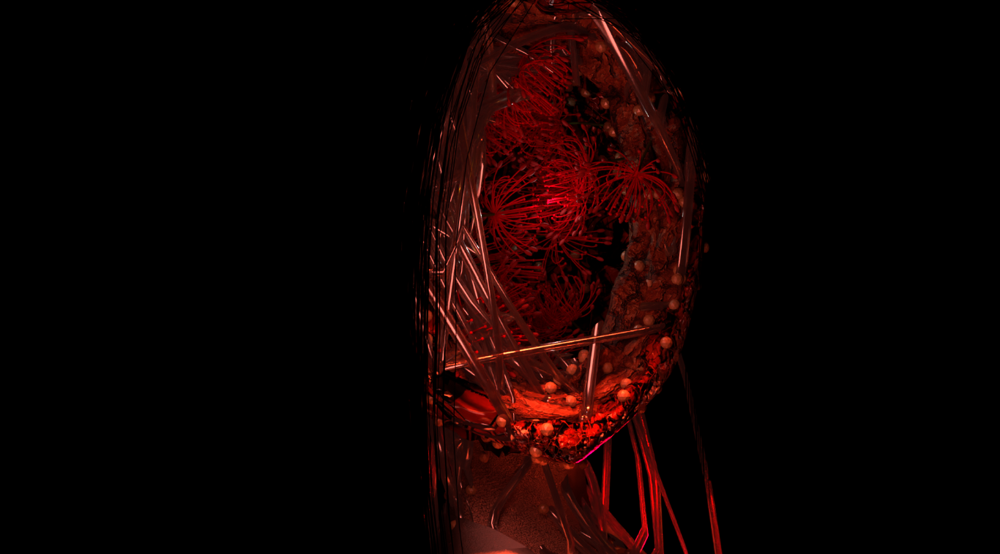
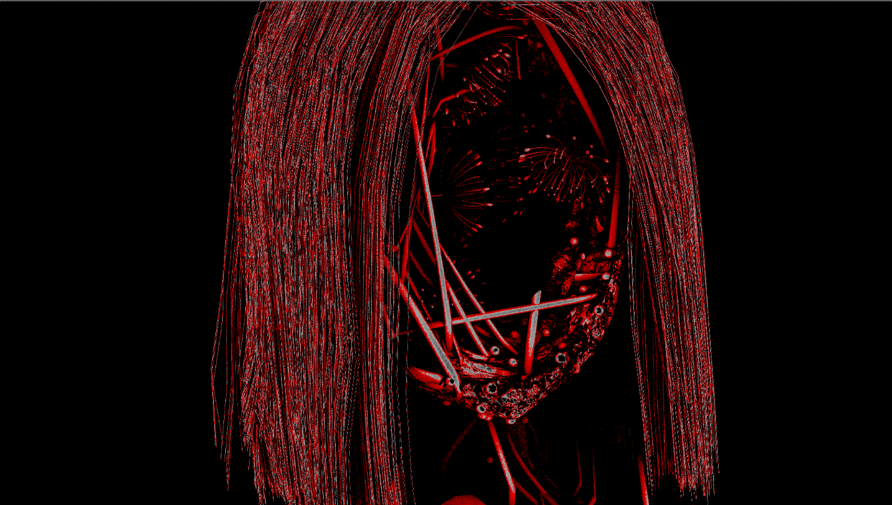
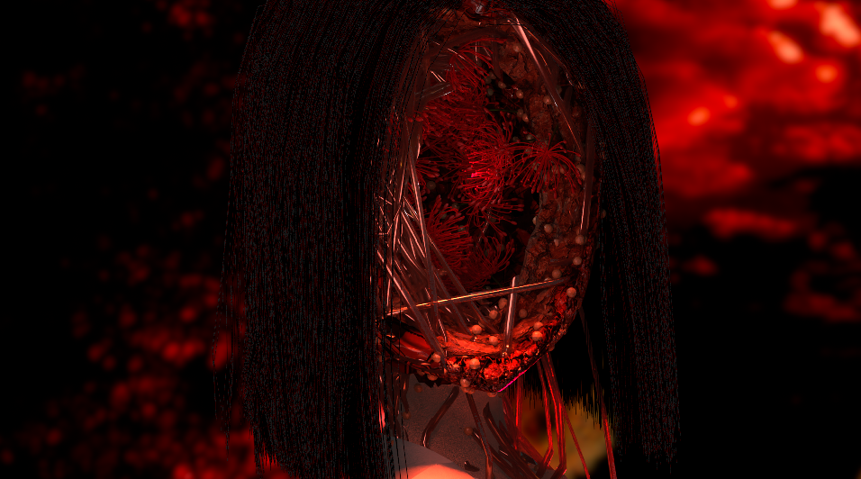
The fallen leaves were also handled in compositing. Because leaves needed frequent adjustment, re-rendering a background of over a thousand frames every time would have been inefficient, so they were treated as a separate layer. The area of the background model where leaves could fall was exported as a Cryptomatte, and the leaves were composited onto the main background in NukeX using that as a mask. The leaves initially looked like they were floating due to insufficient shadow depth — solved by offsetting the Diffuse Light pass and adjusting color and transparency — while overly sharp edges were softened with a slight blur. 落ち葉の表現もコンポジットで実現した。落ち葉は修正頻度が高く、そのたびに千フレーム以上ある背景を再レンダリングするのは 非効率であるため、別レイヤーとして扱った。背景モデルで葉が落ちうる範囲を Cryptomatte として書き出し、 NukeX でマスクとして葉をメイン背景に合成。影の深さが足りず浮いて見えた問題は Diffuse Light パスをずらし 色と透明度を調整することで解決し、縁の鋭さは微弱なぼかしで対処した。
b. Color Adjustment b. カラー調整
Since denoiser performance drops in dark environments, rendering was done with lighting as bright as possible — shot at either the intended hue and saturation or with neutral white lighting — on the assumption that color would later be graded in NukeX. 暗い環境ではデノイザーの性能が落ちるため、レンダリングはなるべく明るいライティングで行い、 想定と同等の色相・彩度、あるいは中立色（白）のライティングで撮影し、後に NukeX で色調整する前提で制作した。
The two dark-dominated environments in this work are the latter half of the shrine scene and the room scene. The shrine scene was rendered at its intended hue and saturation, with gain lowered via NukeX’s Color Adjustment and shadow depth emphasized through AO pass compositing. The room scene was rendered with neutral lighting for ease of adjustment, then had its brightness lowered and red overlaid to bring out a sense of horror and wrongness. 本作で暗い環境が中心となるのは神社シーン後半と部屋シーン。神社シーンは想定と同じ色相・彩度でレンダリングし、 NukeX の Color Adjustment で Gain を下げ、AO パス合成で影の立体感を強調した。 部屋シーンは調整のしやすさから中立色のライティングでレンダリングし、明度を下げて赤をオーバーレイすることで おぞましさを演出した。
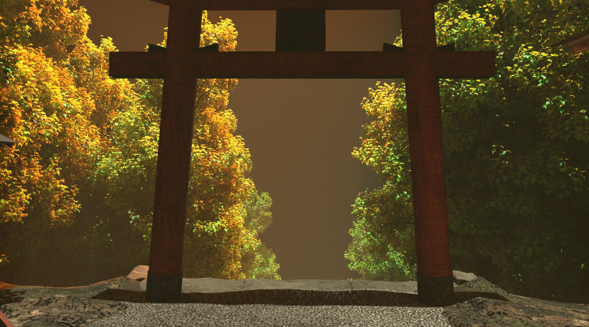

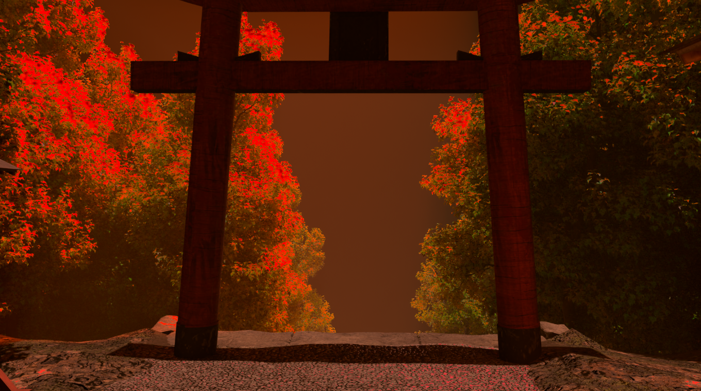


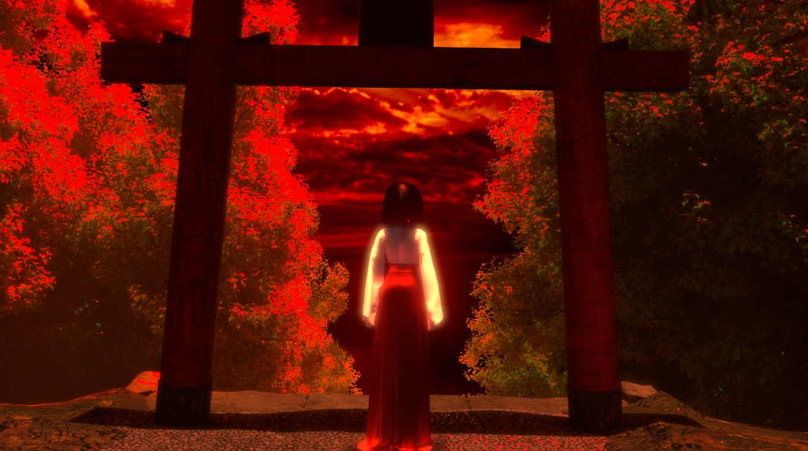

Furniture, walls, and floor were each color-graded individually. Because the wooden desk scatters light, it was tinted red overall by ambient light, while the walls had their red intentionally reduced so the biological tissue attacking from behind them would stand out — each part treated with individual care. 家具・壁・床は個別にカラー調整を行っている。机（木製）は光を散乱する性質から環境光の影響で全体が赤みを帯びるようにし、 壁の背後から襲う生体組織を目立たせるため、あえて赤みを落とすなど部位ごとに細かく対応した。
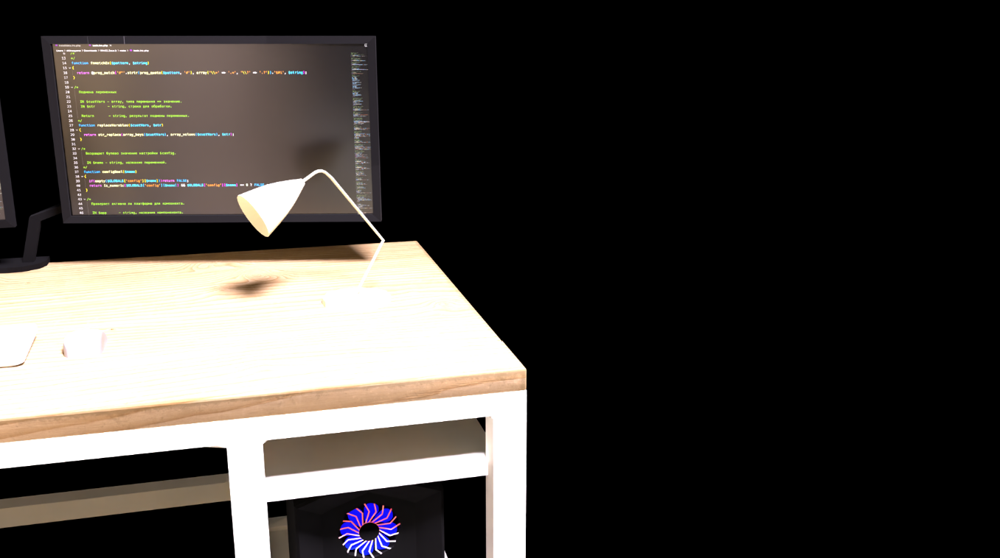

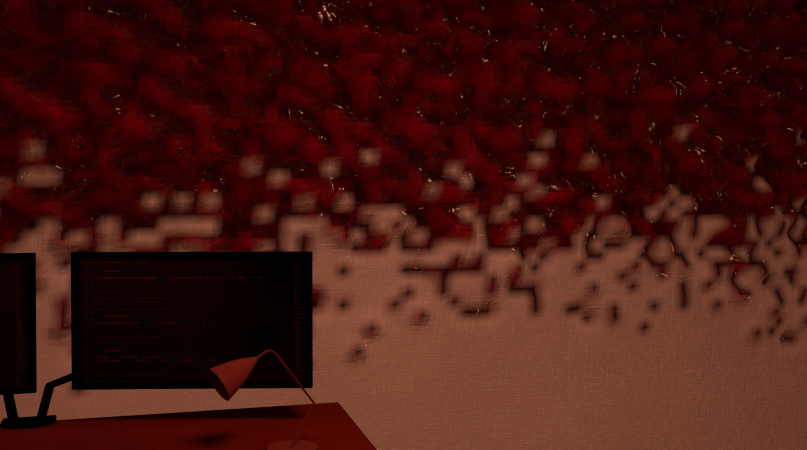

c. Scene Transition Animation c. シーン遷移アニメーション
The transition from a bright dusk sky to a deep, unsettling red sky was expressed through “a flock of crows taking flight.” Since two entirely different environments appear within the same frame, this was hard to achieve in Blender alone and was instead realized in compositing. The leading edge of the crow flock was used as a boundary to advance a Roto Paint mask, and that mask was used to express the transition from the dusk sky to the eerie red sky. 明るい夕暮れの空からまっ赤な不気味な空への遷移は「カラスの群れの飛行」で表現した。同一画面に全く異なる二つの環境が 登場するため Blender のみでの表現は困難であり、コンポジットで実現。カラスの群れの前線を基準に Roto Paint の範囲を 推し進め、そのマスクで夕暮れから不気味な赤空への移行を表現した。
Since increasing the number of crows at render time would raise polygon count and lengthen render time, the flock was instead duplicated in compositing, with scale adjustment and blur used to create a sense of perspective. レンダリング時にカラス数を増やすとポリゴン数増加で所要時間が伸びるため、 鳥の群れをコンポジットで複製し、スケール調整とぼかしで遠近感を出した。
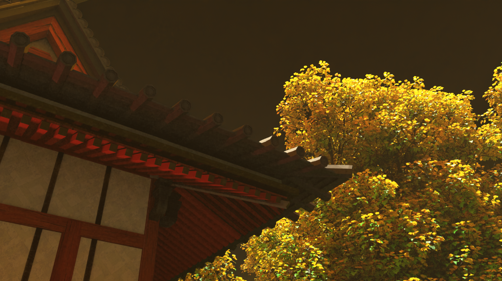

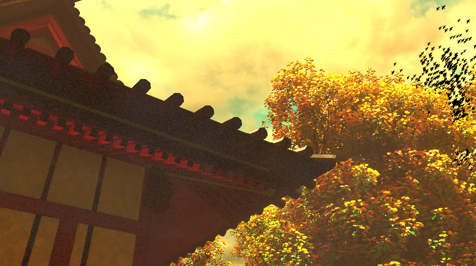
d. Compositing-Based Emergency Fixes d. コンポジットを活用した応急措置
The HDR environment used in this work is a world shader based on a Poly Haven HDR Sky asset, but during the shader-tuning process it was discovered — while adjusting the camera in the latter half of Cut 2 — that about 40% of the HDR was blown out to white, losing the cloud texture. Changing the world shader would have broken the lighting consistency of the main Cut 1, and re-tuning the existing shaders and color grading would have taken an enormous amount of time, so a quick fix in NukeX was chosen instead. 本作で使用した HDR 環境は Poly Haven の HDR Sky アセットをベースにしたワールドシェーダーだが、 シェーダー調整の過程で HDR の約 40% が白飛びし、雲の質感が失われていることをカット 2 後半のカメラ調整時に発見した。 ワールドシェーダーを変更するとメインのカット 1 のライティング整合性が崩れ、既存のシェーダーやカラーグレーディングの 再調整に膨大な時間がかかるため、NukeX での応急措置を選択した。
In Cut 2, within the protagonist’s turning motion, there were roughly four frames where “only trees are visible and almost no sky appears.” Using those four frames, the sky dome was rotated 170 degrees around the Z axis, projecting a correctly-exposed rear sky onto the blown-out forward sky. The 170-degree figure was arrived at through trial and error, specifically to avoid making the audience feel the discomfort of “the same shot being reused.” カット 2 では主人公が振り返る動作の中で、4 フレームほど「木だけが映り空がほとんど映らない」箇所があった。 この 4 フレームを利用し、天球を Z 軸中心に 170 度回転させることで、潰れた前方の空に正常な後方の空を映し出した。 170 度という角度は「同じ絵の使い回し」という違和感を観客に感じさせないよう試行錯誤の末に導いた数値である。
Sound & Audio Design 音響とオーディオ設計
In POV footage the protagonist never appears on screen, so visual information is reduced — which raises the importance of sound as a channel of information. The central challenge was whether sound alone could convey the context of the footage and let the audience experience the world of the piece. POV 映像では主人公が画面に現れず視覚情報が減る分、「音」という情報の重要性が上がる。 音だけで映像の文脈を理解させ、作品の世界を味わってもらえるかが大きな課題であった。
a. Spatial Depth & Presence in Sound Effects a. 音効の立体感と臨場感 dearVR Pro 2
What matters most for sound design in POV footage is a sense of spatial depth and surround centered on the protagonist — that is, the viewer. The dearVR Pro 2 plugin was adopted to precisely control the direction and position of sounds. POV 映像の音効に重要なのは、主人公（＝鑑賞者）を中心とする立体感と包囲感である。 音の方向と位置を正確に定めるため dearVR Pro 2 プラグインを採用した。
In the staircase scene, three types of birdsong were layered to convey the silence and vastness of the mountain. Two were placed nearby, to the left and right, and one further away, using perceived distance to express spatial scale through sound. Nearby sources used Live Arena and Cathedral reverb, while the distant source used Concert Hall reverb, reproducing attenuation over distance. 階段のシーンでは山の静寂と広大さを演出するため 3 種類の鳥の鳴き声を重ねた。うち 2 種類は近い位置の左右に、 もう 1 種類は遠い位置に配置し、遠近感による空間のスケールを音声で表現。近い音源には Live Arena と Cathedral、 遠い音源には Concert Hall のリバーブを設定し、距離による減衰を再現した。

In the scene where the crows fly off, the sound source was positioned above and behind the head, lending believability to the protagonist’s startled turn. Staggering the crow calls by tens of milliseconds reproduced the natural randomness of uneven cries and a pseudo-chaotic sense of echo. カラスが飛び去るシーンでは音源を頭部後方上に定位し、驚いて振り返るという主人公の行動に説得力を持たせた。 カラスの鳴き声を数十ミリ秒ずらして配置することで、不揃いな鳴き声の自然なランダムさと擬似的な反響のカオス感を再現している。
b. Sound Direction b. 音の演出
The interval between footsteps and the sound of each landing shift as the stairs are climbed, expressing a growing sense of fatigue through sound alone. 階段を登るにつれ足音の間隔と着地音を変化させ、疲労を感じる足取りを音で表現した。
After the crows fly off and the sky turns red, the scene where three bell rings startle the protagonist into looking around received extensive work to maximize the sense of tension. The bell sound was shaped with the ReaVerbate effect to add a sense of scale, conveying a feeling of encirclement and despair — as if the uncanny presence were everywhere at once. Each of the three bell rings was pitch-shifted by 0.8, 1.4, and 0.5 semitones respectively, adding variation while also using dissonance to induce unease. カラスが飛び去り空が赤く染まった後、3 回の鈴の音に驚き周囲を見回るシーンでは「緊張感」を最大限に表現する工夫を施した。 鈴の音を ReaVerbate エフェクトで調整しスケール感を出すことで「どこにも遍在する怪異」という包囲感と絶望感を演出。 3 回の鈴の響きはそれぞれ 0.8 / 1.4 / 0.5 セミトーンピッチをずらし、バリエーションと同時に 不調和音による不安感を演出した。

After the sky changes color, the background birdsong also shifts to something more forlorn and sharp-edged, conveying the wrongness and danger of the situation. 空色が変化した後、背景の鳥の鳴き声もより寂しさと鋭さを感じさせるものに変化させ、状況の異常感と危険感を表現した。
The sound is not cut even after the monster appears alongside the shakuhachi tone; the AUReverb Gain was set to 4.56, stretching the reverb to an extreme length. Combined with the camera slowly approaching the monster and zooming in on its face at close range, this built an atmosphere of “no escape,” “being hypnotized,” and “an inescapable curse.” After the screen cuts to black, near-pure tones layering 13,000Hz and 17,000Hz frequencies play, leaving only a sensation of lost sight and ringing ears. 17,000Hz is a frequency some people can hear and others cannot, an experimental touch aiming at “a sound experience that differs depending on the limits of the listener and their equipment.” 尺八の音と共に化け物が登場した後も音を消さず、AUReverb の Gain を 4.56 に設定し残響を極端に伸ばした。 カメラが化け物にゆっくり近づき至近距離で顔にズームインする映像と合わせ、「逃げられない」「催眠されている」 「宿命的な呪い」という雰囲気を醸成した。画面暗転後は 13000Hz と 17000Hz の高周波トーンを重ねた純音に近い音を流し、 視界喪失と耳鳴りだけが残る感覚を演出。17000Hz は聞こえる人と聞こえない人が分かれる周波数であり、 「人と機材の限界によって異なる音響体験」という実験的表現も狙っている。
c. Automation c. オートメーション
Movement tied to the progression of the footage and the character’s actions was expressed through audio automation. In the prologue’s cinemagraph section, narration and BGM volume rise together with the still-image zoom while reverb is adjusted, reproducing a hollow, empty resonance. The narration uses Chorus and AUReverb to lend the voice a sense of emptiness and mystery, fine-tuned in frequency with ReaEQ. The BGM’s reverb, shaped with ReaDelay, gives it weight and gravity. 映像の進行とキャラクターの行動による動きの表現は音響のオートメーションで実現した。 プロローグのシネマグラフィックス部分では、静止画のズームインに合わせてナレーションと BGM のボリュームを上げつつ 反響を調整し、空疎な響きを再現。ナレーションは Chorus と AUReverb で虚無感と神秘的な声質を演出し、 ReaEQ で周波数を微調整。BGM は ReaDelay で残響を表現し重厚感を演出した。
The sound of running water at the purification fountain (chōzuya) is also spatially accurate. It begins playing at low volume the moment the protagonist passes through the torii gate, then changes in volume with distance from the fountain. Since the fountain isn’t always directly ahead, the shifting relative direction of the sound was also reproduced through audio automation. 手水台の流水音も空間的に正しく再現している。主人公が鳥居をくぐった時点で小さいボリュームで再生を始め、 手水台からの距離によってボリュームが変化。手水台が常に正面にあるわけではないため、 相対的な方向の変化と推移も音響のオートメーションで再現した。

d. Motion-Driven Sound d. モーションに伴う音
Since the protagonist can never be seen directly in POV footage, the design of motion-driven sound effects is critical to believability. This production aimed for accurate reproduction of both direct and indirect sounds caused by motion, along with their intensity, direction, and position. POV 映像では主人公を直接見ることができないため、モーションに伴う音効の演出は説得力を上げる上で非常に重要である。 本制作ではモーションによる直接・間接の音、その発生強度、方向と位置の正確な再現を目指した。
Footstep sound changes with the ground material being walked on. In the staircase scene, a firmer base footstep is layered with a quiet gravel-crunch effect, offset by tens of milliseconds to account for the natural motion of a walking foot. Within the shrine grounds, assumed to be covered in fallen leaves, a firmer footstep is layered with a grass-rustling effect, with variation added for leaf size and quantity. The steps of the main shrine hall use a clear, hard footstep, reflecting an image of the area being freshly swept. 足音は歩く地面の素材によって変えている。階段シーンでは硬めの足音をベースに砂利を踏む効果音を小さめでかけ、 人が歩く際の足の運びを考慮し砂利音を数十ミリ秒遅らせて重ねた。神社の境内では落ち葉に覆われた地面を想定し 硬めの足音に草を踏む効果音を重ね、落ち葉の大きさや枚数を考慮したバリエーションを加えた。 社殿の階段は清掃されたイメージのためはっきりとした硬い足音とした。
Sound quality also changes with motion timing. The moment of landing on the final step of the staircase — whether descending or ascending — uses a more forceful footstep. In the room scene, since the two feet rarely land at exactly the same moment as the protagonist steps down from the bed, the audio reproduces a stronger sound for the first foot to land, followed by a softer sound for the second. モーションのタイミングによっても音質を変化させている。階段の最後の段を降りた（登った）着地の瞬間は より力強い足音とした。部屋のシーンでは、主人公がベッドから降り足をつける際、両足が同時に着地することは少ないため 最初に着いた足の力強い音と、続く足の弱い音を再現している。